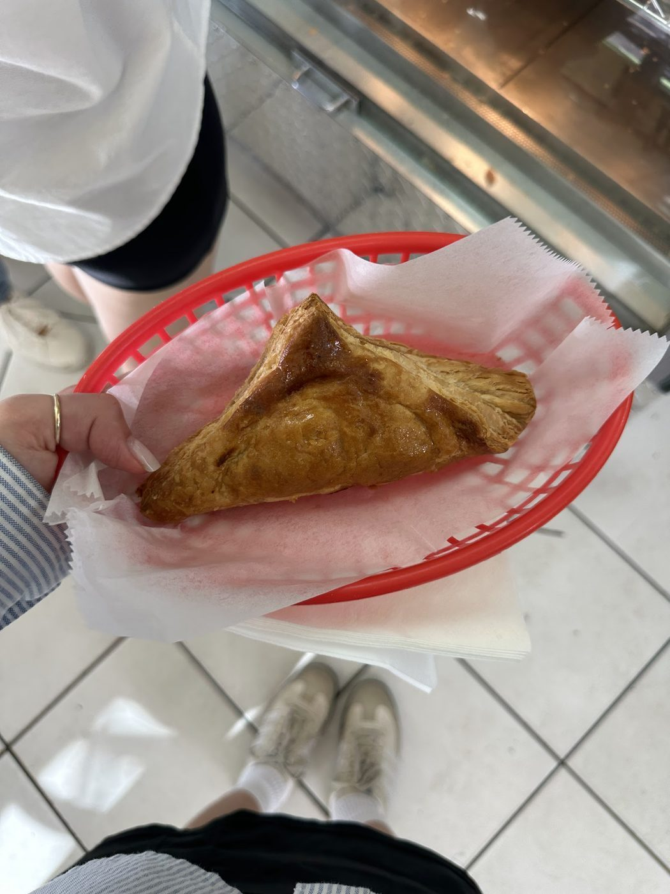

Bakery in Mobile
Cupcakes, cakes, and Southern sweets
Southern Sweets Bakery is a bakery in Mobile, open Wednesday to Saturday, with cupcakes, cake slices and jars, brownies, pralines, loaded spuds, and classic chicken salad, plus custom cakes.
Bakery in Mobile
Southern Sweets Bakery is a bakery in Mobile, open Wednesday to Saturday, with cupcakes, cake slices and jars, brownies, pralines, loaded spuds, and classic chicken salad, plus custom cakes.
Southern Sweets Bakery sits at 3990 Government Blvd Unit A in Mobile. The bakery sells cupcakes, cake slices and jars, chocolate fudge brownies, pecan pralines, loaded spuds, and classic chicken salad, with delivery and pickup through its ordering platform. Custom cakes are available with two business days notice.


3990 Government Blvd Unit A, Mobile, AL 36693
Wednesday to Friday, 11:00 AM to 6:00 PM; Saturday, 10:30 AM to 2:00 PM; closed Sunday to Tuesday